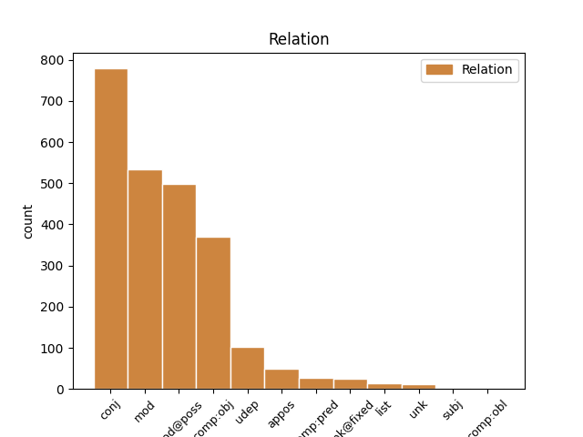
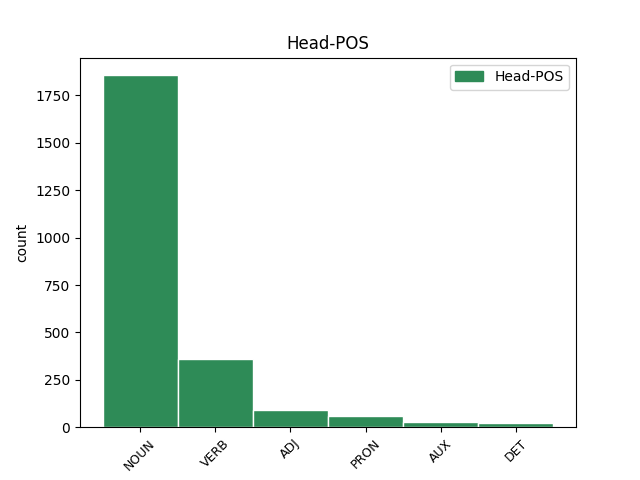
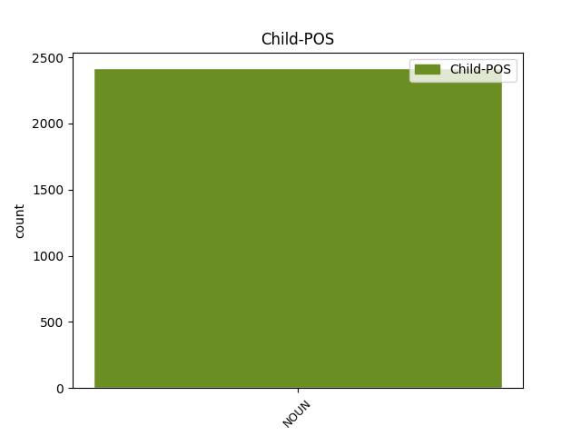

Distribution of features within this leaf



Agreement Rules sorted by frequency.
- When the dependent token is the conjunct(conj) of the head token, and the dependent token is NOUN.
1 Kroaternes _ _ _ _ 0 _ _ _
2 og _ _ _ _ 0 _ _ _
3 slovenernes _ _ _ _ 0 _ _ _
4 glæde glæde NOUN _ Definite=Ind|Gender=Com|Number=Sing 0 _ _ _
5 - _ _ _ _ 0 _ _ _
6 og _ _ _ _ 0 _ _ _
7 selvglæde selvglæde NOUN _ Definite=Ind|Gender=Com|Number=Sing 4 conj _ _
8 - _ _ _ _ 0 _ _ _
9 var _ _ _ _ 0 _ _ _
10 dog _ _ _ _ 0 _ _ _
11 ubesmittet _ _ _ _ 0 _ _ _
12 . _ _ _ _ 0 _ _ _
1 Og _ _ _ _ 0 _ _ _
2 sådan _ _ _ _ 0 _ _ _
3 er _ _ _ _ 0 _ _ _
4 det _ _ _ _ 0 _ _ _
5 også _ _ _ _ 0 _ _ _
6 med _ _ _ _ 0 _ _ _
7 filmen _ _ _ _ 0 _ _ _
8 : _ _ _ _ 0 _ _ _
9 fortryllelsens fortryllelse NOUN _ Case=Gen|Definite=Def|Gender=Com|Number=Sing 10 mod@poss _ _
10 stjernestøv stjernestøv NOUN _ Definite=Ind|Gender=Neut|Number=Sing 0 _ _ _
11 er _ _ _ _ 0 _ _ _
12 blæst _ _ _ _ 0 _ _ _
13 bort _ _ _ _ 0 _ _ _
14 i _ _ _ _ 0 _ _ _
15 banan-røg _ _ _ _ 0 _ _ _
16 ! _ _ _ _ 0 _ _ _
1 " _ _ _ _ 0 _ _ _
2 Orlando _ _ _ _ 0 _ _ _
3 har _ _ _ _ 0 _ _ _
4 forårsaget _ _ _ _ 0 _ _ _
5 noget _ _ _ _ 0 _ _ _
6 af _ _ _ _ 0 _ _ _
7 en _ _ _ _ 0 _ _ _
8 revolution _ _ _ _ 0 _ _ _
9 i _ _ _ _ 0 _ _ _
10 Palermo _ _ _ _ 0 _ _ _
11 , _ _ _ _ 0 _ _ _
12 " _ _ _ _ 0 _ _ _
13 siger _ _ _ _ 0 _ _ _
14 Antonio _ _ _ _ 0 _ _ _
15 Cimino _ _ _ _ 0 _ _ _
16 fra _ _ _ _ 0 _ _ _
17 " _ _ _ _ 0 _ _ _
18 Den _ _ _ _ 0 _ _ _
19 Koordinerede _ _ _ _ 0 _ _ _
20 Bevægelse bevægelse NOUN _ Definite=Ind|Gender=Com|Number=Sing 0 _ _ _
21 mod _ _ _ _ 0 _ _ _
22 Mafiaen _ _ _ _ 0 _ _ _
23 " _ _ _ _ 0 _ _ _
24 , _ _ _ _ 0 _ _ _
25 en _ _ _ _ 0 _ _ _
26 organisation organisation NOUN _ Definite=Ind|Gender=Com|Number=Sing 20 mod _ SpaceAfter=No
27 , _ _ _ _ 0 _ _ _
28 der _ _ _ _ 0 _ _ _
29 er _ _ _ _ 0 _ _ _
30 startet _ _ _ _ 0 _ _ _
31 for _ _ _ _ 0 _ _ _
32 at _ _ _ _ 0 _ _ _
33 bekæmpe _ _ _ _ 0 _ _ _
34 organiseret _ _ _ _ 0 _ _ _
35 kriminalitet _ _ _ _ 0 _ _ _
36 på _ _ _ _ 0 _ _ _
37 Sicilien _ _ _ _ 0 _ _ _
38 . _ _ _ _ 0 _ _ _
1 - _ _ _ _ 0 _ _ _
2 Frifindelsen _ _ _ _ 0 _ _ _
3 er _ _ _ _ 0 _ _ _
4 på _ _ _ _ 0 _ _ _
5 ingen _ _ _ _ 0 _ _ _
6 måde _ _ _ _ 0 _ _ _
7 en _ _ _ _ 0 _ _ _
8 blåstempling _ _ _ _ 0 _ _ _
9 af _ _ _ _ 0 _ _ _
10 , _ _ _ _ 0 _ _ _
11 at _ _ _ _ 0 _ _ _
12 de _ _ _ _ 0 _ _ _
13 har _ _ _ _ 0 _ _ _
14 varetaget varetage VERB _ Definite=Ind|Number=Sing|Tense=Past|VerbForm=Part 0 _ _ _
15 deres _ _ _ _ 0 _ _ _
16 bestyrelsesarbejde bestyrelsesarbejde NOUN _ Definite=Ind|Gender=Neut|Number=Sing 14 comp:obj _ _
17 på _ _ _ _ 0 _ _ _
18 forbilledlig _ _ _ _ 0 _ _ _
19 vis _ _ _ _ 0 _ _ _
20 - _ _ _ _ 0 _ _ _
21 det _ _ _ _ 0 _ _ _
22 er _ _ _ _ 0 _ _ _
23 langt _ _ _ _ 0 _ _ _
24 fra _ _ _ _ 0 _ _ _
25 tilfældet _ _ _ _ 0 _ _ _
26 , _ _ _ _ 0 _ _ _
27 indskød _ _ _ _ 0 _ _ _
28 dommeren _ _ _ _ 0 _ _ _
29 under _ _ _ _ 0 _ _ _
30 sine _ _ _ _ 0 _ _ _
31 bemærkninger _ _ _ _ 0 _ _ _
32 til _ _ _ _ 0 _ _ _
33 dommen _ _ _ _ 0 _ _ _
34 . _ _ _ _ 0 _ _ _
1 VEJLE _ _ _ _ 0 _ _ _
2 : _ _ _ _ 0 _ _ _
3 Adskillige _ _ _ _ 0 _ _ _
4 udtjente _ _ _ _ 0 _ _ _
5 beredskabssygehuse _ _ _ _ 0 _ _ _
6 har _ _ _ _ 0 _ _ _
7 den _ _ _ _ 0 _ _ _
8 seneste _ _ _ _ 0 _ _ _
9 tid tid NOUN _ Definite=Ind|Gender=Com|Number=Sing 10 udep _ _
10 fundet finde VERB _ Definite=Ind|Number=Sing|Tense=Past|VerbForm=Part 0 _ _ _
11 vej _ _ _ _ 0 _ _ _
12 fra _ _ _ _ 0 _ _ _
13 Danmark _ _ _ _ 0 _ _ _
14 til _ _ _ _ 0 _ _ _
15 Østeuropa _ _ _ _ 0 _ _ _
16 , _ _ _ _ 0 _ _ _
17 og _ _ _ _ 0 _ _ _
18 nu _ _ _ _ 0 _ _ _
19 er _ _ _ _ 0 _ _ _
20 to _ _ _ _ 0 _ _ _
21 mere _ _ _ _ 0 _ _ _
22 på _ _ _ _ 0 _ _ _
23 vej _ _ _ _ 0 _ _ _
24 . _ _ _ _ 0 _ _ _
1 Er _ _ _ _ 0 _ _ _
2 der _ _ _ _ 0 _ _ _
3 problemer _ _ _ _ 0 _ _ _
4 med _ _ _ _ 0 _ _ _
5 helbredet _ _ _ _ 0 _ _ _
6 , _ _ _ _ 0 _ _ _
7 så _ _ _ _ 0 _ _ _
8 skriv _ _ _ _ 0 _ _ _
9 til _ _ _ _ 0 _ _ _
10 " _ _ _ _ 0 _ _ _
11 Lægerne _ _ _ _ 0 _ _ _
12 " _ _ _ _ 0 _ _ _
13 , _ _ _ _ 0 _ _ _
14 Ugemagasinet ugemagasin NOUN _ Definite=Def|Gender=Neut|Number=Sing 0 _ _ _
15 SØNDAG søndag NOUN _ Definite=Ind|Gender=Com|Number=Sing 14 appos _ SpaceAfter=No
16 , _ _ _ _ 0 _ _ _
17 Vesterbrogade _ _ _ _ 0 _ _ _
18 16 _ _ _ _ 0 _ _ _
19 , _ _ _ _ 0 _ _ _
20 1505 _ _ _ _ 0 _ _ _
21 København _ _ _ _ 0 _ _ _
22 V. _ _ _ _ 0 _ _ _
23 . _ _ _ _ 0 _ _ _
1 Der _ _ _ _ 0 _ _ _
2 har _ _ _ _ 0 _ _ _
3 ikke _ _ _ _ 0 _ _ _
4 været _ _ _ _ 0 _ _ _
5 under _ _ _ _ 0 _ _ _
6 5.000 _ _ _ _ 0 _ _ _
7 af _ _ _ _ 0 _ _ _
8 slagsen _ _ _ _ 0 _ _ _
9 , _ _ _ _ 0 _ _ _
10 hvor _ _ _ _ 0 _ _ _
11 Margrethe _ _ _ _ 0 _ _ _
12 ikke _ _ _ _ 0 _ _ _
13 har _ _ _ _ 0 _ _ _
14 været være AUX _ Definite=Ind|Number=Sing|Tense=Past|VerbForm=Part 0 _ _ _
15 æresgæsten æresgæst NOUN _ Definite=Def|Gender=Com|Number=Sing 14 comp:pred _ SpaceAfter=No
16 . _ _ _ _ 0 _ _ _
1 Her _ _ _ _ 0 _ _ _
2 i _ _ _ _ 0 _ _ _
3 byen _ _ _ _ 0 _ _ _
4 er _ _ _ _ 0 _ _ _
5 han _ _ _ _ 0 _ _ _
6 i _ _ _ _ 0 _ _ _
7 hvert hver DET _ Gender=Com|Number=Sing|PronType=Ind 0 _ _ _
8 fald fald NOUN _ Definite=Ind|Gender=Neut|Number=Sing 7 unk@fixed _ _
9 ikke _ _ _ _ 0 _ _ _
10 . _ _ _ _ 0 _ _ _
1 Det _ _ _ _ 0 _ _ _
2 er _ _ _ _ 0 _ _ _
3 ikke _ _ _ _ 0 _ _ _
4 en _ _ _ _ 0 _ _ _
5 ny _ _ _ _ 0 _ _ _
6 version version NOUN _ Definite=Ind|Gender=Com|Number=Sing 0 _ _ _
7 af _ _ _ _ 0 _ _ _
8 Pointer _ _ _ _ 0 _ _ _
9 Sisters' _ _ _ _ 0 _ _ _
10 gamle _ _ _ _ 0 _ _ _
11 hit _ _ _ _ 0 _ _ _
12 , _ _ _ _ 0 _ _ _
13 ej _ _ _ _ 0 _ _ _
14 heller _ _ _ _ 0 _ _ _
15 et _ _ _ _ 0 _ _ _
16 remix _ _ _ _ 0 _ _ _
17 af _ _ _ _ 0 _ _ _
18 Van _ _ _ _ 0 _ _ _
19 Halens _ _ _ _ 0 _ _ _
20 "Jump"-nummer _ _ _ _ 0 _ _ _
21 , _ _ _ _ 0 _ _ _
22 men _ _ _ _ 0 _ _ _
23 derimod _ _ _ _ 0 _ _ _
24 en _ _ _ _ 0 _ _ _
25 helt _ _ _ _ 0 _ _ _
26 ny _ _ _ _ 0 _ _ _
27 hip _ _ _ _ 0 _ _ _
28 hop _ _ _ _ 0 _ _ _
29 sang sang NOUN _ Definite=Ind|Gender=Com|Number=Sing 6 unk _ SpaceAfter=No
30 , _ _ _ _ 0 _ _ _
31 som _ _ _ _ 0 _ _ _
32 rappes _ _ _ _ 0 _ _ _
33 af _ _ _ _ 0 _ _ _
34 12-årige _ _ _ _ 0 _ _ _
35 Chris _ _ _ _ 0 _ _ _
36 Smith _ _ _ _ 0 _ _ _
37 og _ _ _ _ 0 _ _ _
38 13-årige _ _ _ _ 0 _ _ _
39 Chris _ _ _ _ 0 _ _ _
40 Kelly _ _ _ _ 0 _ _ _
41 . _ _ _ _ 0 _ _ _
1 Deltager _ _ _ _ 0 _ _ _
2 De _ _ _ _ 0 _ _ _
3 også _ _ _ _ 0 _ _ _
4 i _ _ _ _ 0 _ _ _
5 " _ _ _ _ 0 _ _ _
6 Ugens _ _ _ _ 0 _ _ _
7 Overraskelse _ _ _ _ 0 _ _ _
8 " _ _ _ _ 0 _ _ _
9 på _ _ _ _ 0 _ _ _
10 side _ _ _ _ 0 _ _ _
11 47 _ _ _ _ 0 _ _ _
12 , _ _ _ _ 0 _ _ _
13 så _ _ _ _ 0 _ _ _
14 kommer _ _ _ _ 0 _ _ _
15 De _ _ _ _ 0 _ _ _
16 blot _ _ _ _ 0 _ _ _
17 kuponen _ _ _ _ 0 _ _ _
18 i _ _ _ _ 0 _ _ _
19 én _ _ _ _ 0 _ _ _
20 kuvert _ _ _ _ 0 _ _ _
21 mærket _ _ _ _ 0 _ _ _
22 " _ _ _ _ 0 _ _ _
23 Ugens uge NOUN _ Case=Gen|Definite=Def|Gender=Com|Number=Sing 0 _ _ _
24 Overraskelse _ _ _ _ 0 _ _ _
25 - _ _ _ _ 0 _ _ _
26 uge uge NOUN _ Definite=Ind|Gender=Com|Number=Sing 23 list _ _
27 47 _ _ _ _ 0 _ _ _
28 " _ _ _ _ 0 _ _ _
29 og _ _ _ _ 0 _ _ _
30 " _ _ _ _ 0 _ _ _
31 DUPLO _ _ _ _ 0 _ _ _
32 legetøj _ _ _ _ 0 _ _ _
33 " _ _ _ _ 0 _ _ _
34 . _ _ _ _ 0 _ _ _
1 Og _ _ _ _ 0 _ _ _
2 det _ _ _ _ 0 _ _ _
3 har _ _ _ _ 0 _ _ _
4 ankenævnet _ _ _ _ 0 _ _ _
5 altså _ _ _ _ 0 _ _ _
6 givet give VERB _ Definite=Ind|Number=Sing|Tense=Past|VerbForm=Part 0 _ _ _
7 selskabet selskab NOUN _ Definite=Def|Gender=Neut|Number=Sing 6 comp:obl _ _
8 medhold _ _ _ _ 0 _ _ _
9 i _ _ _ _ 0 _ _ _
10 . _ _ _ _ 0 _ _ _
1 Museet _ _ _ _ 0 _ _ _
2 i _ _ _ _ 0 _ _ _
3 Malacanang _ _ _ _ 0 _ _ _
4 , _ _ _ _ 0 _ _ _
5 et _ _ _ _ 0 _ _ _
6 slags _ _ _ _ 0 _ _ _
7 rædselskabinet _ _ _ _ 0 _ _ _
8 , _ _ _ _ 0 _ _ _
9 der _ _ _ _ 0 _ _ _
10 skulle _ _ _ _ 0 _ _ _
11 bekrive _ _ _ _ 0 _ _ _
12 afdøde _ _ _ _ 0 _ _ _
13 præsident _ _ _ _ 0 _ _ _
14 Ferdinand _ _ _ _ 0 _ _ _
15 Marcos _ _ _ _ 0 _ _ _
16 og _ _ _ _ 0 _ _ _
17 hans _ _ _ _ 0 _ _ _
18 hustrus _ _ _ _ 0 _ _ _
19 bizarre _ _ _ _ 0 _ _ _
20 og _ _ _ _ 0 _ _ _
21 ekstravagante _ _ _ _ 0 _ _ _
22 livsstil _ _ _ _ 0 _ _ _
23 , _ _ _ _ 0 _ _ _
24 da _ _ _ _ 0 _ _ _
25 de _ _ _ _ 0 _ _ _
26 sad _ _ _ _ 0 _ _ _
27 ved _ _ _ _ 0 _ _ _
28 magten _ _ _ _ 0 _ _ _
29 i _ _ _ _ 0 _ _ _
30 1960'erne _ _ _ _ 0 _ _ _
31 og _ _ _ _ 0 _ _ _
32 70'erne _ _ _ _ 0 _ _ _
33 , _ _ _ _ 0 _ _ _
34 er _ _ _ _ 0 _ _ _
35 nu _ _ _ _ 0 _ _ _
36 overtaget _ _ _ _ 0 _ _ _
37 af _ _ _ _ 0 _ _ _
38 landets _ _ _ _ 0 _ _ _
39 Kulturfond _ _ _ _ 0 _ _ _
40 og _ _ _ _ 0 _ _ _
41 skal _ _ _ _ 0 _ _ _
42 istedet _ _ _ _ 0 _ _ _
43 anskueliggøre _ _ _ _ 0 _ _ _
44 , _ _ _ _ 0 _ _ _
45 hvad hvad PRON _ Number=Sing|PronType=Int,Rel 0 _ _ _
46 den _ _ _ _ 0 _ _ _
47 filippinske _ _ _ _ 0 _ _ _
48 nation nation NOUN _ Definite=Ind|Gender=Com|Number=Sing 45 subj _ _
49 gennem _ _ _ _ 0 _ _ _
50 årene _ _ _ _ 0 _ _ _
51 har _ _ _ _ 0 _ _ _
52 mestret _ _ _ _ 0 _ _ _
53 kulturelt _ _ _ _ 0 _ _ _
54 . _ _ _ _ 0 _ _ _
Disagree Examples:
1 Steen _ _ _ _ 0 _ _ _
2 Gade _ _ _ _ 0 _ _ _
3 siger _ _ _ _ 0 _ _ _
4 , _ _ _ _ 0 _ _ _
5 at _ _ _ _ 0 _ _ _
6 SF _ _ _ _ 0 _ _ _
7 ikke _ _ _ _ 0 _ _ _
8 kan _ _ _ _ 0 _ _ _
9 gå _ _ _ _ 0 _ _ _
10 med _ _ _ _ 0 _ _ _
11 til _ _ _ _ 0 _ _ _
12 fælles _ _ _ _ 0 _ _ _
13 forsvar _ _ _ _ 0 _ _ _
14 , _ _ _ _ 0 _ _ _
15 den _ _ _ _ 0 _ _ _
16 økonomisk-monetære _ _ _ _ 0 _ _ _
17 union _ _ _ _ 0 _ _ _
18 , _ _ _ _ 0 _ _ _
19 unionsborgerskab unionsborgerskab NOUN _ Definite=Ind|Gender=Neut|Number=Sing 0 _ _ _
20 og _ _ _ _ 0 _ _ _
21 dele del NOUN _ Definite=Ind|Gender=Com|Number=Plur 19 conj _ _
22 af _ _ _ _ 0 _ _ _
23 det _ _ _ _ 0 _ _ _
24 retslige _ _ _ _ 0 _ _ _
25 samarbejde _ _ _ _ 0 _ _ _
26 . _ _ _ _ 0 _ _ _
1 For _ _ _ _ 0 _ _ _
2 otte _ _ _ _ 0 _ _ _
3 millioner _ _ _ _ 0 _ _ _
4 pund _ _ _ _ 0 _ _ _
5 er _ _ _ _ 0 _ _ _
6 byttet _ _ _ _ 0 _ _ _
7 " _ _ _ _ 0 _ _ _
8 Living _ _ _ _ 0 _ _ _
9 Legend _ _ _ _ 0 _ _ _
10 " _ _ _ _ 0 _ _ _
11 , _ _ _ _ 0 _ _ _
12 hvor _ _ _ _ 0 _ _ _
13 man _ _ _ _ 0 _ _ _
14 bliver _ _ _ _ 0 _ _ _
15 ført _ _ _ _ 0 _ _ _
16 gennem _ _ _ _ 0 _ _ _
17 hele _ _ _ _ 0 _ _ _
18 historien _ _ _ _ 0 _ _ _
19 med _ _ _ _ 0 _ _ _
20 billeder billede NOUN _ Definite=Ind|Gender=Neut|Number=Plur 0 _ _ _
21 , _ _ _ _ 0 _ _ _
22 lyd lyd NOUN _ Definite=Ind|Gender=Com|Number=Sing 20 conj _ SpaceAfter=No
23 , _ _ _ _ 0 _ _ _
24 tåge _ _ _ _ 0 _ _ _
25 , _ _ _ _ 0 _ _ _
26 lyn _ _ _ _ 0 _ _ _
27 , _ _ _ _ 0 _ _ _
28 torden _ _ _ _ 0 _ _ _
29 , _ _ _ _ 0 _ _ _
30 storm _ _ _ _ 0 _ _ _
31 og _ _ _ _ 0 _ _ _
32 andre _ _ _ _ 0 _ _ _
33 effekter _ _ _ _ 0 _ _ _
34 . _ _ _ _ 0 _ _ _
1 For _ _ _ _ 0 _ _ _
2 otte _ _ _ _ 0 _ _ _
3 millioner _ _ _ _ 0 _ _ _
4 pund _ _ _ _ 0 _ _ _
5 er _ _ _ _ 0 _ _ _
6 byttet _ _ _ _ 0 _ _ _
7 " _ _ _ _ 0 _ _ _
8 Living _ _ _ _ 0 _ _ _
9 Legend _ _ _ _ 0 _ _ _
10 " _ _ _ _ 0 _ _ _
11 , _ _ _ _ 0 _ _ _
12 hvor _ _ _ _ 0 _ _ _
13 man _ _ _ _ 0 _ _ _
14 bliver _ _ _ _ 0 _ _ _
15 ført _ _ _ _ 0 _ _ _
16 gennem _ _ _ _ 0 _ _ _
17 hele _ _ _ _ 0 _ _ _
18 historien _ _ _ _ 0 _ _ _
19 med _ _ _ _ 0 _ _ _
20 billeder _ _ _ _ 0 _ _ _
21 , _ _ _ _ 0 _ _ _
22 lyd _ _ _ _ 0 _ _ _
23 , _ _ _ _ 0 _ _ _
24 tåge tåge NOUN _ Definite=Ind|Gender=Com|Number=Sing 0 _ _ _
25 , _ _ _ _ 0 _ _ _
26 lyn lyn NOUN _ Definite=Ind|Gender=Neut|Number=Plur 24 conj _ SpaceAfter=No
27 , _ _ _ _ 0 _ _ _
28 torden _ _ _ _ 0 _ _ _
29 , _ _ _ _ 0 _ _ _
30 storm _ _ _ _ 0 _ _ _
31 og _ _ _ _ 0 _ _ _
32 andre _ _ _ _ 0 _ _ _
33 effekter _ _ _ _ 0 _ _ _
34 . _ _ _ _ 0 _ _ _
1 For _ _ _ _ 0 _ _ _
2 otte _ _ _ _ 0 _ _ _
3 millioner _ _ _ _ 0 _ _ _
4 pund _ _ _ _ 0 _ _ _
5 er _ _ _ _ 0 _ _ _
6 byttet _ _ _ _ 0 _ _ _
7 " _ _ _ _ 0 _ _ _
8 Living _ _ _ _ 0 _ _ _
9 Legend _ _ _ _ 0 _ _ _
10 " _ _ _ _ 0 _ _ _
11 , _ _ _ _ 0 _ _ _
12 hvor _ _ _ _ 0 _ _ _
13 man _ _ _ _ 0 _ _ _
14 bliver _ _ _ _ 0 _ _ _
15 ført _ _ _ _ 0 _ _ _
16 gennem _ _ _ _ 0 _ _ _
17 hele _ _ _ _ 0 _ _ _
18 historien _ _ _ _ 0 _ _ _
19 med _ _ _ _ 0 _ _ _
20 billeder _ _ _ _ 0 _ _ _
21 , _ _ _ _ 0 _ _ _
22 lyd _ _ _ _ 0 _ _ _
23 , _ _ _ _ 0 _ _ _
24 tåge _ _ _ _ 0 _ _ _
25 , _ _ _ _ 0 _ _ _
26 lyn lyn NOUN _ Definite=Ind|Gender=Neut|Number=Plur 0 _ _ _
27 , _ _ _ _ 0 _ _ _
28 torden torden NOUN _ Definite=Ind|Gender=Com|Number=Sing 26 conj _ SpaceAfter=No
29 , _ _ _ _ 0 _ _ _
30 storm _ _ _ _ 0 _ _ _
31 og _ _ _ _ 0 _ _ _
32 andre _ _ _ _ 0 _ _ _
33 effekter _ _ _ _ 0 _ _ _
34 . _ _ _ _ 0 _ _ _
1 For _ _ _ _ 0 _ _ _
2 otte _ _ _ _ 0 _ _ _
3 millioner _ _ _ _ 0 _ _ _
4 pund _ _ _ _ 0 _ _ _
5 er _ _ _ _ 0 _ _ _
6 byttet _ _ _ _ 0 _ _ _
7 " _ _ _ _ 0 _ _ _
8 Living _ _ _ _ 0 _ _ _
9 Legend _ _ _ _ 0 _ _ _
10 " _ _ _ _ 0 _ _ _
11 , _ _ _ _ 0 _ _ _
12 hvor _ _ _ _ 0 _ _ _
13 man _ _ _ _ 0 _ _ _
14 bliver _ _ _ _ 0 _ _ _
15 ført _ _ _ _ 0 _ _ _
16 gennem _ _ _ _ 0 _ _ _
17 hele _ _ _ _ 0 _ _ _
18 historien _ _ _ _ 0 _ _ _
19 med _ _ _ _ 0 _ _ _
20 billeder _ _ _ _ 0 _ _ _
21 , _ _ _ _ 0 _ _ _
22 lyd _ _ _ _ 0 _ _ _
23 , _ _ _ _ 0 _ _ _
24 tåge _ _ _ _ 0 _ _ _
25 , _ _ _ _ 0 _ _ _
26 lyn _ _ _ _ 0 _ _ _
27 , _ _ _ _ 0 _ _ _
28 torden _ _ _ _ 0 _ _ _
29 , _ _ _ _ 0 _ _ _
30 storm storm NOUN _ Definite=Ind|Gender=Com|Number=Sing 0 _ _ _
31 og _ _ _ _ 0 _ _ _
32 andre _ _ _ _ 0 _ _ _
33 effekter effekt NOUN _ Definite=Ind|Gender=Com|Number=Plur 30 conj _ SpaceAfter=No
34 . _ _ _ _ 0 _ _ _